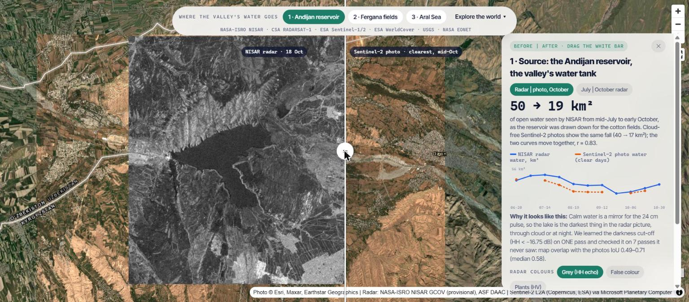
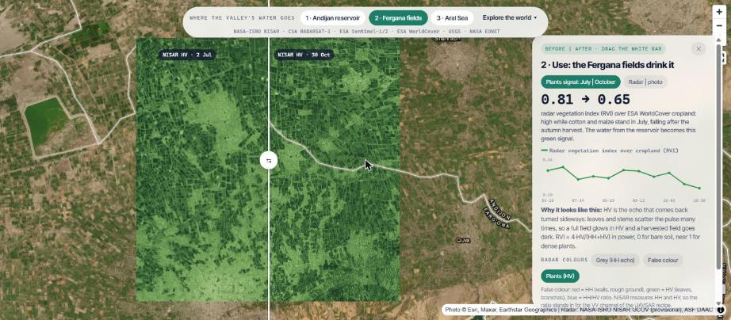
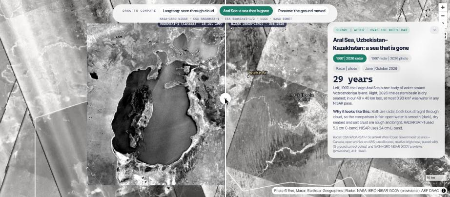
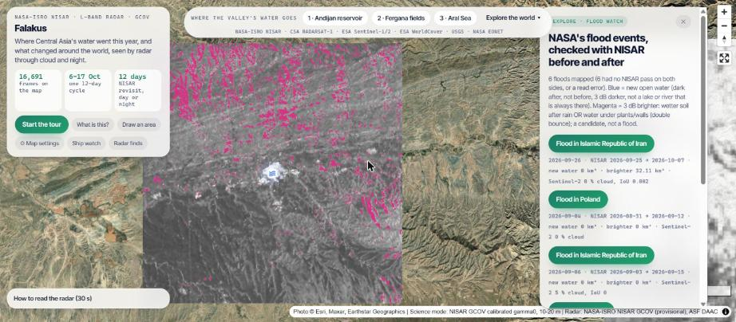

<title>PAGEL Jarvis Audit</title>
<link rel="preconnect" href="https://fonts.googleapis.com">
<link rel="stylesheet" href="https://fonts.googleapis.com/css2?family=Inter+Tight:wght@400;500;600;800&display=swap">
<style>
.shot{border-radius:18px;overflow:hidden;box-shadow:0 14px 34px -18px rgba(15,22,48,.45);border:1px solid rgba(255,255,255,.9);background:#fff}
.shot img{display:block;width:100%;height:100%;object-fit:cover}
.cap{font:400 11px/1.4 var(--mono);color:var(--ink-3);margin-top:8px}
.tile{padding:14px;border-radius:20px;display:grid;grid-template-rows:140px auto auto auto;gap:7px}
.tile .shot{height:140px}
.tile b{font:400 21px/1 var(--mono);color:var(--mint)}
.tile h4{margin:0;font-size:15px;font-weight:800}
.tile p{font-size:12.5px;line-height:1.4;color:var(--ink-2)}
.t30{list-style:none;margin:0;padding:0;display:grid;gap:5px}
.t30 li{display:grid;grid-template-columns:26px 1fr auto;gap:6px;font-size:13px;line-height:1.3;align-items:baseline}
.t30 li i{font:400 11px/1 var(--mono);color:var(--ink-3);font-style:normal}
.t30 li s{text-decoration:none;font:400 10px/1 var(--mono);padding:3px 6px;border-radius:99px;background:rgba(15,22,48,.06);color:var(--ink-2)}
.t30 li s.on{background:var(--mint-s);color:var(--mint)}
</style>
<style>
/* Layout: same 1200x675 slide stage as the app deck. Eye Run look: pale page, soft mint + blue light, white glass, mint mono numbers */
@font-face{font-family:"Departure Mono";src:url("fonts/DepartureMono.woff2") format("woff2");font-display:swap}
:root{
  --page:#F2F4F8; --ink:#0F1630; --ink-2:#4B5470; --ink-3:#8A92AA; --line:#E6E9F1;
  --mint:#1C7E69; --mint-s:rgba(28,126,105,.10);
  --amber:#B45309; --amber-s:rgba(180,83,9,.10);
  --blue:#2563EB; --blue-s:rgba(37,99,235,.09);
  --violet:#7C3AED; --violet-s:rgba(124,58,237,.09);
  --sans:"Inter Tight",system-ui,-apple-system,"Segoe UI",sans-serif;
  --mono:"Departure Mono",ui-monospace,"Cascadia Mono",Consolas,monospace;
  --r:28px; color-scheme:light;
}
*{box-sizing:border-box}
html,body{height:100%}
body{margin:0;overflow:hidden;color:var(--ink);font:400 17px/1.5 var(--sans);-webkit-font-smoothing:antialiased;
  background:radial-gradient(1100px 620px at 12% -8%,#D9F0E6 0%,transparent 62%),radial-gradient(900px 560px at 92% 2%,#DDE6FB 0%,transparent 58%),radial-gradient(800px 500px at 60% 115%,#E1F2EC 0%,transparent 60%),var(--page)}
.stage{position:fixed;left:50%;top:50%;width:1200px;height:675px;transform-origin:center}
.glass{position:relative;border-radius:var(--r);background:rgba(255,255,255,.72);border:1px solid rgba(255,255,255,.9);
  box-shadow:0 1px 1px rgba(15,22,48,.04),0 10px 28px -14px rgba(15,22,48,.22),inset 0 1px 0 rgba(255,255,255,.95);
  -webkit-backdrop-filter:blur(22px) saturate(1.35);backdrop-filter:blur(22px) saturate(1.35);overflow:hidden}
.glass::before{content:"";position:absolute;inset:0;border-radius:inherit;pointer-events:none;background:linear-gradient(145deg,rgba(255,255,255,.55) 0%,rgba(255,255,255,0) 42%)}
.glass>*{position:relative}
.mint-card{background:linear-gradient(150deg,#1C7E69 0%,#23A06C 100%);border-color:rgba(255,255,255,.35);color:#fff;box-shadow:0 18px 36px -16px rgba(28,126,105,.55),inset 0 1px 0 rgba(255,255,255,.35)}
.mint-card::before{background:linear-gradient(145deg,rgba(255,255,255,.22) 0%,rgba(255,255,255,0) 45%)}
.slide{position:absolute;inset:0;padding:40px 52px 96px;opacity:0;visibility:hidden;transform:translateX(18px);transition:opacity .4s ease,transform .45s cubic-bezier(.23,1,.32,1),visibility 0s .4s}
.slide.on{opacity:1;visibility:visible;transform:none;transition:opacity .4s ease,transform .45s cubic-bezier(.23,1,.32,1)}
.slide.back{transform:translateX(-18px)}
@media (prefers-reduced-motion:reduce){.slide,.slide.on{transition:opacity .15s;transform:none}}
.eyebrow{font:400 12px/1.4 var(--mono);letter-spacing:.14em;text-transform:uppercase;color:var(--ink-2);margin:0}
h1,h2,h3{font-family:var(--sans);margin:0;text-wrap:balance}
h1{font-weight:800;font-size:48px;line-height:1.05;letter-spacing:-.03em}
h2{font-weight:800;font-size:38px;line-height:1.08;letter-spacing:-.025em}
h3{font-weight:800;font-size:21px;line-height:1.25;letter-spacing:-.012em}
p{margin:0}
.muted{color:var(--ink-2)}
.big{font:400 84px/.9 var(--mono);letter-spacing:-.045em;color:var(--mint)}
.kpi{border-radius:18px;background:rgba(255,255,255,.66);border:1px solid rgba(255,255,255,.9);box-shadow:0 8px 22px -16px rgba(15,22,48,.3),inset 0 1px 0 rgba(255,255,255,.95);-webkit-backdrop-filter:blur(16px);backdrop-filter:blur(16px);padding:16px 18px}
.kpi b{display:block;font:400 30px/1 var(--mono);letter-spacing:-.03em}
.kpi span{display:block;font:400 11.5px/1.4 var(--mono);color:var(--ink-2);margin-top:8px}
.kpi.warn b{color:var(--amber)}
.chip{display:inline-flex;align-items:center;gap:7px;font:400 11px/1 var(--mono);letter-spacing:.08em;text-transform:uppercase;padding:7px 11px;border-radius:999px;background:var(--s-soft,var(--mint-s));color:var(--s,var(--mint));white-space:nowrap}
.chip::before{content:"";width:6px;height:6px;border-radius:50%;background:var(--s,var(--mint))}
.c-amber{--s:var(--amber);--s-soft:var(--amber-s)}.c-blue{--s:var(--blue);--s-soft:var(--blue-s)}.c-violet{--s:var(--violet);--s-soft:var(--violet-s)}
.lab{font:400 11px/1.4 var(--mono);letter-spacing:.14em;text-transform:uppercase;color:var(--ink-3);margin:0 0 8px}
.ul{list-style:none;margin:0;padding:0;display:grid;gap:8px}
.ul li{position:relative;padding-left:22px;font-size:15.5px;line-height:1.45}
.ul li::before{content:"";position:absolute;left:3px;top:.55em;width:8px;height:8px;border-radius:50%;background:var(--mint)}
.ul.amber li::before{background:var(--amber)}
.raw{font:400 12.5px/1.55 var(--mono);background:rgba(15,22,48,.045);border-radius:14px;padding:14px 16px;color:var(--ink);white-space:pre;overflow:hidden}
.raw .hl{color:var(--amber)}
.find{display:grid;grid-template-columns:1fr 1fr;gap:14px;position:absolute;left:52px;right:52px;top:186px;height:400px}
.find>.glass{padding:24px 26px;display:grid;align-content:start;gap:12px}
.dock{position:absolute;left:50%;bottom:18px;transform:translateX(-50%);display:flex;align-items:center;gap:12px;padding:7px 9px;border-radius:999px;z-index:5}
.dock button{all:unset;cursor:pointer;width:38px;height:38px;border-radius:50%;display:grid;place-items:center;color:var(--ink);transition:background .2s}
.dock button:hover{background:rgba(15,22,48,.05)}
.dots{display:flex;gap:6px;align-items:center}
.dots button{all:unset;cursor:pointer;width:7px;height:7px;border-radius:99px;background:rgba(15,22,48,.16);transition:width .3s cubic-bezier(.23,1,.32,1),background .3s}
.dots button.on{width:22px;background:var(--mint)}
.count{font:400 12px/1 var(--mono);color:var(--ink-2);min-width:50px;text-align:center}
button:focus-visible{outline:2px solid var(--mint);outline-offset:2px}
.bar{height:16px;border-radius:7px;background:rgba(15,22,48,.06);position:relative;overflow:hidden;box-shadow:inset 0 1px 2px rgba(15,22,48,.07)}
.bar i{position:absolute;left:0;top:0;bottom:0;border-radius:7px;box-shadow:inset 0 1px 0 rgba(255,255,255,.45)}
.bar i.now{background:var(--amber)}
.bar i.goal{background:rgba(28,126,105,.22);border:1.5px dashed rgba(28,126,105,.6);box-shadow:none}
.idea{padding:12px 14px;border-radius:18px;display:grid;grid-template-columns:30px 1fr;gap:8px;align-items:start}
.idea b{font:400 13px/1.3 var(--mono);color:var(--mint)}
.idea h4{margin:0;font-weight:600;font-size:14.5px;line-height:1.3}
.idea p{font-size:12.5px;line-height:1.4;color:var(--ink-2);margin-top:3px}
.node{position:absolute;padding:12px 14px;border-radius:18px;text-align:center}
.node h4{margin:0;font-weight:800;font-size:15px}
.node p{font:400 10.5px/1.4 var(--mono);color:var(--ink-2);margin-top:4px}
table{border-collapse:collapse;width:100%}
th,td{text-align:left;padding:6px 9px;border-bottom:1px solid var(--line);font-size:12.5px;line-height:1.35;vertical-align:top}
th{font:400 10.5px/1.4 var(--mono);letter-spacing:.1em;text-transform:uppercase;color:var(--ink-2)}
td b{font-weight:600}
</style>

<main class="stage" id="stage" aria-roledescription="slide deck"></main>
<script>
const S=[];
const F=(n,t)=>`<p class="eyebrow">${n}</p><h2 style="margin-top:12px">${t}</h2>`;
S.push(`
 <div style="position:absolute;left:56px;top:56px;width:500px;display:grid;gap:20px">
  <p class="eyebrow">Falakus · NASA Space Apps 2026 · Dancing with the SARs</p>
  <h1>The Fergana valley drinks from one reservoir. Cameras lose sight of it every winter.</h1>
  <p class="muted" style="font-size:17px">We built a free, open tool that measures the water every 12 days with NASA-ISRO NISAR radar, through cloud and at night, and checks every number against photos.</p>
  <div style="display:grid;grid-template-columns:1fr 1fr 1fr;gap:10px">
   <div class="kpi warn"><b>34 %</b><span>of 2025 camera visits to the reservoir were mostly cloud (63 % in Dec&ndash;Mar)</span></div>
   <div class="kpi"><b>51 &rarr; 19 km&sup2;</b><span>reservoir water NISAR measured, 14 Jul &rarr; 6 Oct 2026</span></div>
   <div class="kpi"><b>r = 0.83</b><span>radar vs cloud-free photos</span></div>
  </div>
 </div>
 <div style="position:absolute;left:590px;right:52px;top:56px;height:520px">
  <div class="shot" style="height:470px"></div>
  <p class="cap">Our app, first screen: drag the white bar, radar &#8644; photo. The chart is radar water vs photo water, every pass.</p>
 </div>`);
S.push(`${F("01 · the problem","Water decisions are made half-blind")}
 <div style="position:absolute;left:52px;right:52px;top:150px;display:grid;grid-template-columns:repeat(3,1fr);gap:12px">
  <div class="glass" style="padding:22px;display:grid;gap:8px;align-content:start"><b style="font:400 30px/1 var(--mono);color:var(--mint)">1 reservoir</b><h3>feeds the valley</h3><p class="muted" style="font-size:14px">The Andijan reservoir on the Kara Darya stores spring water and releases it June&ndash;September for cotton and wheat in the Fergana valley, Uzbekistan's most crowded region.</p></div>
  <div class="glass" style="padding:22px;display:grid;gap:8px;align-content:start"><b style="font:400 30px/1 var(--mono);color:#C2410C">1 in 3</b><h3>camera visits lost to cloud</h3><p class="muted" style="font-size:14px">Sentinel-2, 2025: 29 of 85 visits were mostly cloud, 15 of 24 in Dec&ndash;Mar, exactly when the spring water budget is planned.</p></div>
  <div class="glass" style="padding:22px;display:grid;gap:8px;align-content:start"><b style="font:400 30px/1 var(--mono);color:var(--mint)">Aral</b><h3>where the water ends</h3><p class="muted" style="font-size:14px">The same rivers once filled the Aral Sea. Canada's 1997 radar shows open sea; today the eastern basin is dry.</p></div>
 </div>
 <div class="glass mint-card" style="position:absolute;left:52px;right:52px;top:430px;padding:20px 26px"><p style="font-size:17px"><b>Not another dashboard.</b> A dashboard shows a picture. Falakus gives a basin water manager one checked number every 12 days, says how sure it is, and shows the photo it was checked against.</p></div>`);
S.push(`${F("02 · the water road","Three chapters, one river, one radar")}
 <div style="position:absolute;left:52px;right:52px;top:150px;display:grid;grid-template-columns:repeat(3,1fr);gap:14px">
  <div class="glass tile"><div class="shot"></div><b>51 &rarr; 19 km&sup2;</b><h4>1 · Source: Andijan reservoir</h4><p>Calm water is a mirror for the radar pulse, so it is black. NISAR counts the black area every pass; photos agree (r = 0.83). By 30 Oct it is refilling: 33 km&sup2;.</p></div>
  <div class="glass tile"><div class="shot"></div><b>RVI 0.81 &rarr; 0.65</b><h4>2 · Use: Fergana fields</h4><p>HV is the echo turned sideways by leaves and stems. It glows while cotton grows and fades after harvest: the water becomes crops.</p></div>
  <div class="glass tile"><div class="shot"></div><b>1997 &#8644; 2026</b><h4>3 · End: Aral Sea</h4><p>Canada's RADARSAT-1 in 1997 next to NISAR in 2026: radar against radar, 29 years apart, no clouds in either.</p></div>
 </div>`);
S.push(`${F("03 · how we know it is right","Every number has an outside check, and we show where we fail")}
 <div class="glass" style="position:absolute;left:52px;right:52px;top:150px;padding:20px 26px">
 <table><thead><tr><th>claim</th><th>outside check</th><th>result</th></tr></thead><tbody>
  <tr><td><b>Reservoir water area</b></td><td>Sentinel-2 photo water (NDWI) on clear days, 8 passes</td><td>areas track each other r = 0.83; radar over-counts ~8.6 km&sup2; in late summer (wet mud)</td></tr>
  <tr><td><b>The water rule is not tuned to the answer</b></td><td>cut-off learned on ONE pass, tested on 7 it never saw</td><td>map overlap IoU 0.49&ndash;0.71, median 0.58</td></tr>
  <tr><td><b>Ships found by our 10 m detector</b></td><td>a 0.5 m ICEYE radar image of the Bosphorus, 5 h later</td><td>5 of 12 dots on ships you can see; 1 false (breakwater)</td></tr>
  <tr><td><b>Where it fails (shown, not hidden)</b></td><td>same water rule on the Aral salt flats and Fergana canals</td><td>salt crust is as smooth as water; canals are narrower than a 20 m pixel</td></tr>
  <tr><td><b>Data status</b></td><td>NASA's own labels</td><td>NISAR provisional before 21 Oct 2026; data gap 27 Jul&ndash;10 Aug</td></tr>
 </tbody></table></div>`);
S.push(`${F("04 · it scales","The same engine, anywhere on Earth")}
 <div style="position:absolute;left:52px;top:150px;width:640px">
  <div class="shot" style="height:380px"></div>
  <p class="cap">Flood watch: NASA's EONET flood list, each event checked with the NISAR pass before and after it.</p>
 </div>
 <div style="position:absolute;left:720px;right:52px;top:150px;display:grid;gap:12px">
  <div class="glass mint-card" style="padding:20px"><b style="font:400 38px/1 var(--mono)">35</b><p style="margin-top:8px;font-size:14px">NASA flood events checked so far; 15 had a NISAR pass on both sides. Blue = new open water, magenta = brighter (flooded plants or wet soil, a candidate).</p></div>
  <div class="glass" style="padding:18px 20px"><p class="lab">Also in Explore</p><p style="font-size:14px">16,691 NISAR frames on a world map · compare any two layers anywhere · Langtang landslide under cloud · Panama quake fringes with a control pair · ships and oil-slick candidates.</p></div>
 </div>`);
S.push(`${F("05 · who acts on it","From a radar echo to a decision")}
 <div style="position:absolute;left:52px;right:52px;top:150px;display:grid;grid-template-columns:repeat(3,1fr);gap:12px">
  <div class="glass" style="padding:22px;display:grid;gap:8px;align-content:start"><b style="font:400 26px/1 var(--mono);color:var(--mint)">every 12 days</b><h3>Basin water managers</h3><p class="muted" style="font-size:14px">How fast stored water is being spent, cloud or not, with the photo check beside it.</p></div>
  <div class="glass" style="padding:22px;display:grid;gap:8px;align-content:start"><b style="font:400 26px/1 var(--mono);color:var(--mint)">harvest week</b><h3>Farm and food agencies</h3><p class="muted" style="font-size:14px">The HV crop signal shows when fields are full and when they are cut, across the whole valley.</p></div>
  <div class="glass" style="padding:22px;display:grid;gap:8px;align-content:start"><b style="font:400 26px/1 var(--mono);color:var(--mint)">next pass</b><h3>Teachers and the public</h3><p class="muted" style="font-size:14px">Every screen explains HH, HV and the mirror effect in plain words, so a 10-year-old can read the radar.</p></div>
 </div>
 <div class="glass" style="position:absolute;left:52px;right:52px;top:420px;padding:18px 24px"><p style="font-size:15px"><b>What NISAR makes possible next:</b> volume from area plus a shoreline height model; Toktogul and Rogun upstream for the whole Syr Darya and Amu Darya chain; centimetre ground motion of dams with interferometry.</p></div>`);
S.push(`${F("06 · why us","Our valley, our water, NASA's radar")}
 <div style="position:absolute;left:52px;right:52px;top:150px;display:grid;grid-template-columns:1.1fr 1fr;gap:14px">
  <div class="glass" style="padding:24px;display:grid;gap:12px;align-content:start">
   <p style="font-size:16px">We are a team of four from Uzbekistan. The Fergana valley is home; the Aral is our country's best-known loss. We built the tool we wanted for our own region, then made it work for any place on Earth.</p>
   <p class="muted" style="font-size:14px">Reads NASA's calibrated NISAR files directly (box reads, no 2 GB downloads) · Lee speckle filter · water from HH, crops from HV · Sentinel-1, RADARSAT-1 and ICEYE for other frequencies and other years · ESA WorldCover and JRC water for context.</p>
  </div>
  <div class="glass mint-card" style="padding:24px;display:grid;gap:10px;align-content:start">
   <p class="lab">Open, and honest by design</p>
   <p style="font-size:15px">MIT licence. Every number comes from a script anyone can rerun, and every claim sits next to its outside check, including the places where radar is fooled.</p>
   <p style="font:400 13px/1.4 var(--mono)">github.com/tolipovmurodjon/falakus</p>
  </div>
 </div>`);
const stage=document.getElementById("stage");
stage.innerHTML=S.map((s,i)=>`<section class="slide" id="s${i+1}" aria-label="Slide ${i+1} of ${S.length}">${s}</section>`).join("")+
 `<nav class="dock glass" aria-label="Slides"><button id="prev" aria-label="Previous slide"><svg width="18" height="18" viewBox="0 0 24 24" fill="none" stroke="currentColor" stroke-width="2" stroke-linecap="round" stroke-linejoin="round"><path d="M15 18l-6-6 6-6"/></svg></button>
  <div class="dots">${S.map((_,i)=>`<button aria-label="Slide ${i+1}"></button>`).join("")}</div><span class="count" id="count"></span>
  <button id="next" aria-label="Next slide"><svg width="18" height="18" viewBox="0 0 24 24" fill="none" stroke="currentColor" stroke-width="2" stroke-linecap="round" stroke-linejoin="round"><path d="M9 18l6-6-6-6"/></svg></button></nav>`;
let cur=-1;const SL=[...document.querySelectorAll(".slide")],DT=[...document.querySelectorAll(".dots button")];
function go(i,quiet){i=Math.max(0,Math.min(SL.length-1,i));if(i===cur)return;
 SL.forEach((s,k)=>{s.classList.toggle("on",k===i);s.classList.toggle("back",k<i)});DT.forEach((d,k)=>d.classList.toggle("on",k===i));
 document.getElementById("count").textContent=`${i+1} / ${SL.length}`;cur=i;if(!quiet)try{history.replaceState(null,"","#s"+(i+1))}catch(e){}}
document.getElementById("prev").onclick=()=>go(cur-1);document.getElementById("next").onclick=()=>go(cur+1);
DT.forEach((d,k)=>d.onclick=()=>go(k));
addEventListener("keydown",e=>{const k=e.key;if(k==="ArrowRight"||k==="PageDown"||k===" "){e.preventDefault();go(cur+1)}else if(k==="ArrowLeft"||k==="PageUp"){e.preventDefault();go(cur-1)}else if(k==="Home")go(0);else if(k==="End")go(SL.length-1)});
let wl=0;addEventListener("wheel",e=>{const t=Date.now(),d=Math.abs(e.deltaY)>Math.abs(e.deltaX)?e.deltaY:e.deltaX;if(t-wl<750||Math.abs(d)<24)return;wl=t;go(cur+(d>0?1:-1))},{passive:true});
let px=null,py=null;addEventListener("pointerdown",e=>{px=e.clientX;py=e.clientY});
addEventListener("pointerup",e=>{if(px===null)return;const dx=e.clientX-px,dy=e.clientY-py;px=null;if(Math.abs(dx)>50&&Math.abs(dx)>Math.abs(dy))go(cur+(dx<0?1:-1))});
function fromHash(){const m=/^#s(\d+)$/.exec(location.hash);go(m?+m[1]-1:0,true)}
addEventListener("hashchange",fromHash);
function fit(){const s=Math.min(innerWidth/1200,innerHeight/675);stage.style.transform=`translate(-50%,-50%) scale(${s})`}
addEventListener("resize",fit);fit();fromHash();
</script>
<title>Falakus Story Pitch</title>
<link rel="preconnect" href="https://fonts.googleapis.com">
<link rel="stylesheet" href="https://fonts.googleapis.com/css2?family=Inter+Tight:wght@400;500;600;800&display=swap">
